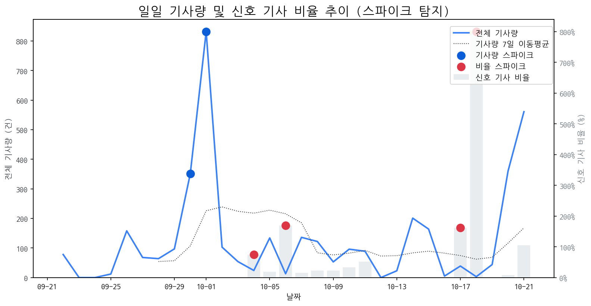

| 날짜 | 기사량 | Z-Score |
|---|---|---|
| 2025-09-30 | 351건 | 2.04 |
| 2025-10-01 | 832건 | 2.1 |
| 날짜 | 비율 | Z-Score |
|---|---|---|
| 2025-10-04 | 75.00% | 2.27 |
| 2025-10-06 | 169.23% | 2.05 |
| 2025-10-17 | 161.54% | 2.15 |
| 2025-10-18 | 800.00% | 2.22 |
| 급등 신호 | 오늘 언급량 | 어제 대비 증가 | 모멘텀(z_like) |
|---|---|---|---|
| 삼성 | 46 | 3 | 6.05 |
| lg전자 | 29 | 5 | 4.87 |
| lg | 29 | 4 | 4.75 |
| 차세대 | 10 | 9 | 3.31 |
| ar | 6 | 5 | 2.35 |
| ces | 5 | 5 | 2.32 |
| 패널 | 6 | 4 | 2.21 |
| 아이폰 | 7 | 3 | 2.18 |
| 갤럭시 | 6 | 3 | 2.08 |
| 백플레인 | 4 | 4 | 1.95 |
| 모멘텀 토픽 | z_like 점수 | 누적 언급량 |
|---|---|---|
| 삼성 | 6.05 | 438 |
| lg전자 | 4.87 | 99 |
| lg | 4.75 | 310 |
| 삼성전자 | 3.35 | 194 |
| 차세대 | 3.31 | 49 |
| 날짜 | 유형 | 제목 |
|---|---|---|
| 2025-10-20 | LAUNCH | 인하대학교 이정환 교수 연구실 소속 학생들, 국제학술대회서 성과 인정 |
| 2025-10-21 | CERT,INVEST,LAUNCH,ORDER,PARTNERSHIP,REGUL | 10월 4주 주요 제조업 전망 |
| 2025-10-21 | INVEST,ORDER | OLED 대형 패널 시장 확대…선익시스템 성장 기대감↑ |
| 2025-10-15 | LAUNCH | 인하대, 이정환 교수 연구실 학생들 'iMiD 국제학술대회'서 성과 인정 |
| 2025-10-15 | LAUNCH | 인하대, 국제학술대회서 학생 연구 성과 인정 |